品牌素材
點擊「複製連結」按鈕即可複製圖片網址，可直接用於網頁、文章、簡報、AI 工具。點擊「下載」可下載原始檔。
官方品牌標誌
所有 Logo 變體採用統一命名 schema：{形態}-{色號}.png。色號共 4 種：charcoal（深灰 #3E3A39，淺底用）、tan（暖棕 #D2A475，主視覺）、green（深綠 #002504，品牌記憶色）、cream（米色 #F5F1E8，深底用）。形態共 10 種，列於下方。
Mark — 純標誌（圓圈 + S 緞帶）
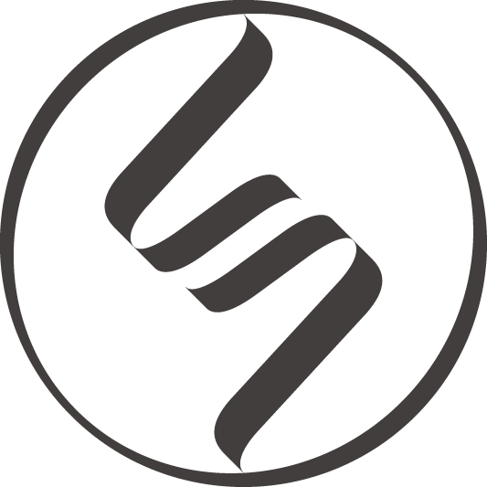
{kind=link}
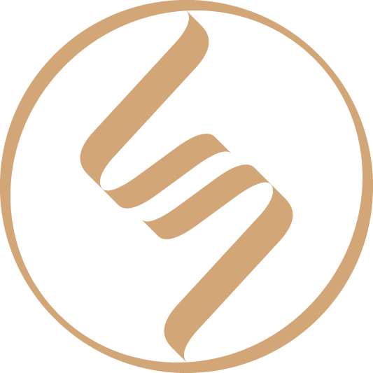
{kind=link}
{kind=link}
{kind=link}
Wordmark — 單獨標準字
wordmark-en-{色}
Mr.Whisky 英文標準字（4 色）
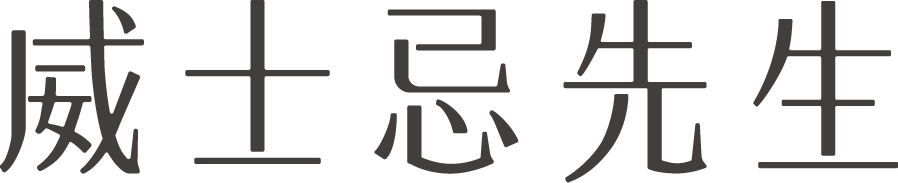
wordmark-zh-{色}
威士忌先生 中文標準字（4 色）
Combo · 橫式 — 網頁 header / 招牌

combo-h-en-{色}
logo + Mr.Whisky 橫排
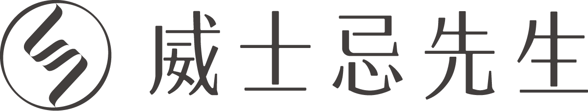
combo-h-zh-{色}
logo + 威士忌先生 橫排
⚠️ 不提供「logo + 英文 + 中文」三元素全橫排版本（破壞留白質感）。三元素都要時請改用直式。
Combo · 直式 — 主視覺 / 海報 / 禮盒
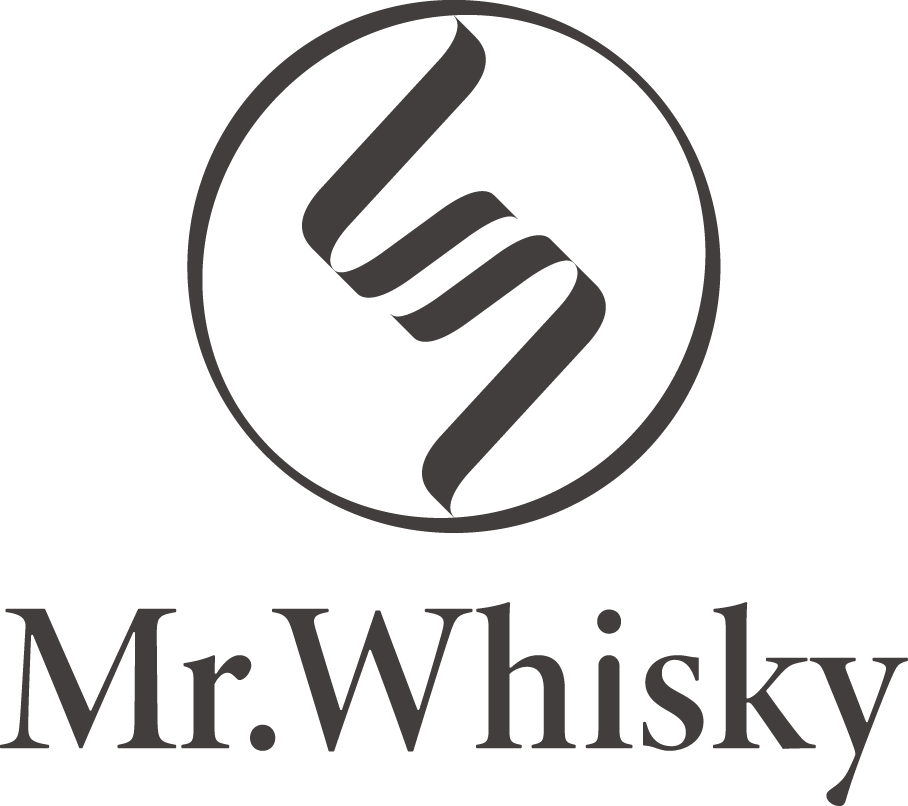
combo-v-en-{色}
logo 上 / Mr.Whisky 下
combo-v-zh-{色}
logo 上 / 威士忌先生 下
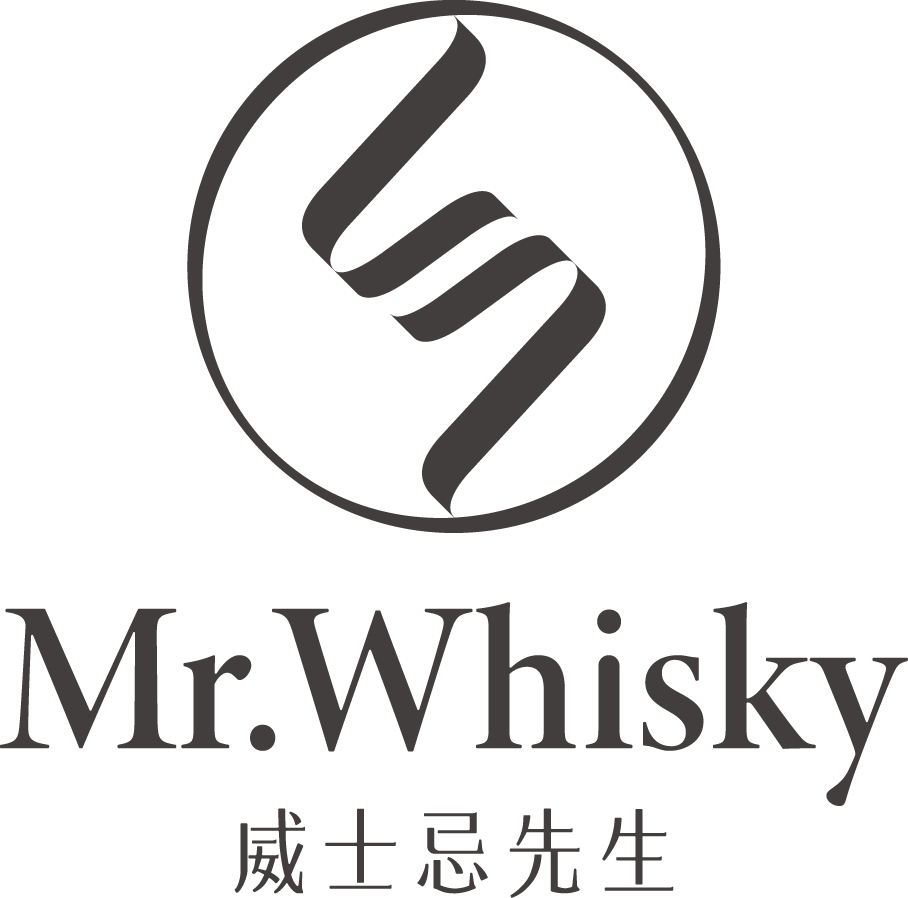
combo-v-full-{色}
logo / Mr.Whisky / 威士忌先生 三層
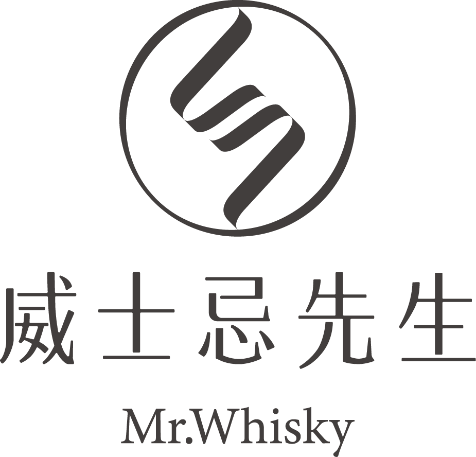
combo-v-full-reverse-{色}
logo / 威士忌先生 / Mr.Whisky 三層（順序顛倒）
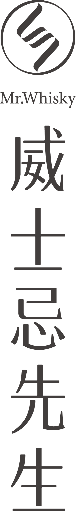
combo-v-tall-{色}
中文垂直書寫超細長版（書脊／酒櫃側貼／IG Story）
輔助圖形 — X 形花紋系統
輔助圖形的設計與表現有利於品牌形象建立。設計概念為將原 LOGO 拆解成 M 與 W 兩字重新排列組合。提供兩款獨立單元（可重複排列為 pattern tile），每款 4 色變體。
XPattern 1 — M 形（較密）
xpattern-1-charcoal
深灰；淺底用
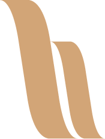
xpattern-1-tan
暖棕；主視覺 pattern
xpattern-1-green
深綠；紙袋／信封內襯
xpattern-1-cream
米色；深底背景紋
完整對稱版（4 元件鏡像構成）：xpattern-1-composition.png
XPattern 2 — 緞帶形（較疏）
xpattern-2-charcoal
深灰；淺底用
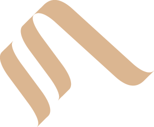
xpattern-2-tan
暖棕；大型背板／包裝
xpattern-2-green
深綠；橫幅、外盒
xpattern-2-cream
米色；深底大型 pattern
完整對稱版：xpattern-2-composition.png · 兩款搭配建議：XPattern 1 較密適合小尺寸（杯墊、信封、紙袋）；XPattern 2 較疏適合大尺寸（背板、橫幅、外盒）。
Logo 應用示意
以下為 Logo 在實體載體上的應用範例（取自品牌規範 PDF）。AI 設計工具或合作對象可參考這些範例理解品牌實際呈現方式。
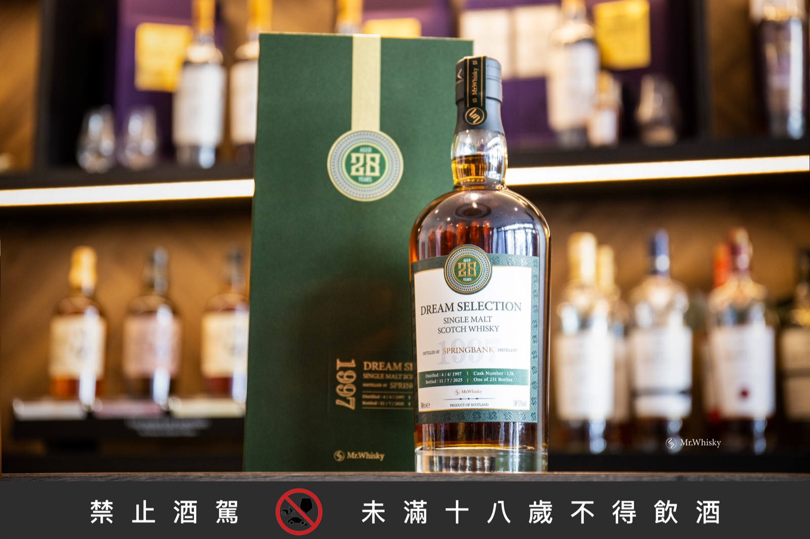
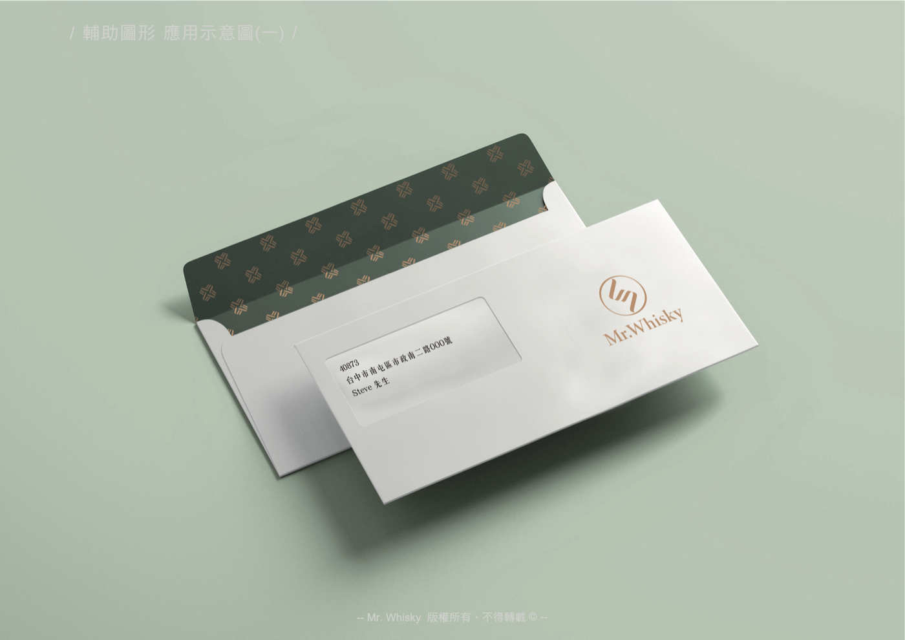
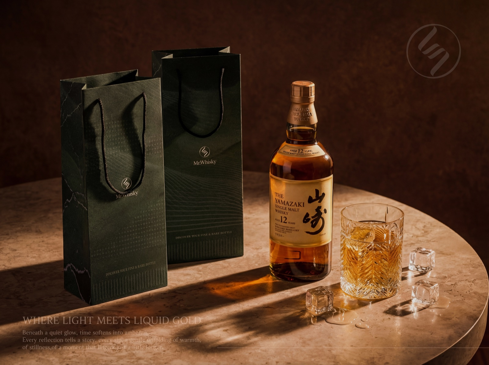
使用守則
| 場景 | 使用方式 |
|---|---|
| 淺色 / 白色背景 | 使用「彩色 Logo」或「黑色 Logo」 |
| 深色 / 黑色背景 | 使用「白色 Logo」 |
| 正方形容器（IG 大頭貼） | 使用「彩色 Logo（圓形）」 |
| 網頁 Header（橫向） | 使用「橫式 Logo」 |
| 禁止 | 變形、改色、加陰影、加邊框 |